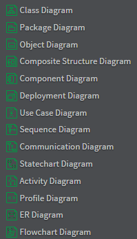

UML有3类模型，5类图形，是系统设计的有力建模工具，可在项目的需求分析>功能设计>架构设计>详细设计>数据模型设计等阶段进行迭代更新；
帮助团队成员从宏观到细节整体认识产品，有利于知识共享，便于团队协作并建立共识。
如何用UML进行系统设计
UML
UML(Unified Model Language)，统一建模语言，又称标准建模语言。是用来对软件密集系统进行可视化建模的一种语言。
3个主要的UML模型
功能模型: 从用户的角度展示系统的功能，包括用例图。对象模型: 采用对象，属性，操作，关联等概念展示系统的基础结构，包括类图、对象图、包图。动态模型: 展现系统的内部行为。 包括时序图，活动图，状态图。
5类UML图
UML可分为用例图，静态图，行为图，交互图，实现图5类
- 用例图：从用户角度描述系统功能，并指各功能的操作者。
- 静态图：包括类图，包图，对象图。
- 类图（Class Diagram）：描述系统中类的静态结构
- 包图（Package Diagram）：是包和类组成的，表示包与包之间的关系，包图描述系统的
分层结构 - 对象图（Object Diagram）：是类图的实例
- 行为图：描述系统
动态模型和对象组成的交换关系。包括状态图和活动图- 活动图（Activity Diagram）：描述了业务实现用例的工作流程，业务流程建模时梳理业务场景对应的业务逻辑
- 状态图（State Diagram）：是描述状态到状态控制流，常用于动态特性建模
- 交互图：描述对象之间的
交互关系- 时序图（Sequence Diagram）：对象之间的动态合作关系，强调对象发送消息的顺序，同时显示对象之间的交互
- 通信图（Communication Diagram）：描述对象之间的消息流和协作关系
- 实现图：
- 部署图（Deploy Diagram）：定义系统中软硬件的物理体系结构
- 组件图（Composite Structure Diagram）：定义组件间的依赖关系
其他UML图
- Profile Diagram：提供自定义stereotypes,tagged values,constrains来描述轻量级扩展机制的结构图，Profiles允许适应不同的UML元模型，如Java EE，.Net Framework，领域流程建模，面向服务的体系结构等等。
UML组件参数
Interaction Frames (Combined Fragment)
| 类型 | 描述 |
|---|---|
| alt | Divides fragment into groups and defines condition for each group - only the one whose condition is true will execute . |
| opt | Defines condition to a single call - the call will execute only if the supplied condition is true . Equivalent to an alt with only one trace. |
| par | Defines that the calls within the fragment run in parallel. |
| loop | Defines that the calls within the fragment run in a loop. |
| region | Defines that the calls within the fragment reside in a critical section, i.e. the fragment can have only one thread executing it at once. |
StarUML流程图列表

需求分析
产品经理需根据用户故事梳理Use Case Diagram，系统>功能模块；
原型设计
产品经理需根据需求文档，同步设计产品原型（axure），并根据需求确定不同保真层级，一般中保真即可；
架构设计
架构师可根据需求文档，以Package Diagram设计模块间的关系，做模块分层设计；
eg 基础设施(支撑层)>计算框架>模型与算法>业务应用层
部署结构
以始为终，同步设计最终交付时的线上部署方案，完成Deployment Diagram；
eg 其中部署图包含负载均衡、应用层服务器、RPC服务器、MySQL数据库集群、Hive集群、Spark计算集群、ETCD配置应用服务集群、
接口文档
同步根据用例图和原型设计为实现功能所需的API接口文档，确定每个功能模块的输入输出；
可用如
APIDoc这类工具编码编写API接口然后生成Html，接口代码后续可导入到StarUML中作为Class Diagram的一部分；
组件关系设计
通过梳理接口文档，此时已对系统实现所需的基础技术支撑和应用组件都有所把握，此时可将思路整理为,Composite Structure Diagram，
eg 前端-[接口]->后端-[接口]->RPC服务-[jdbc]->数据库
详细设计
在完成产品原型设计，和系统总体架构设计后，此时可进行实现细节设计，
后端可根据需求/接口文档以Package Diagram,Class Diagram形式完善细节，并完成2类时序图Sequence Diagram：
- 前后端交互时序图（设计原型时同步完成）；
- 具体功能对应的后端逻辑时序图（class调用）
如果系统中涉及的对象非常复杂或要求精密，如汽车类工业设计，此时需提供每个组件对象的Object Diagram；
- 如果系统存在复杂且要求精确的业务状态变更，如支付状态，需提供
StateChart Diagram； - 根据需要绘制数据流向图
FlowChart Diagram，如涉及多源数据聚合，整合的ETL系统；
数据模型设计
根据功能需求，设计数据模型：表结构/表关系，完成ER Diagram；